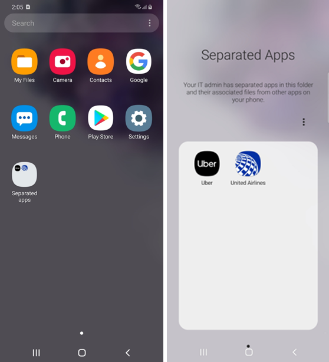
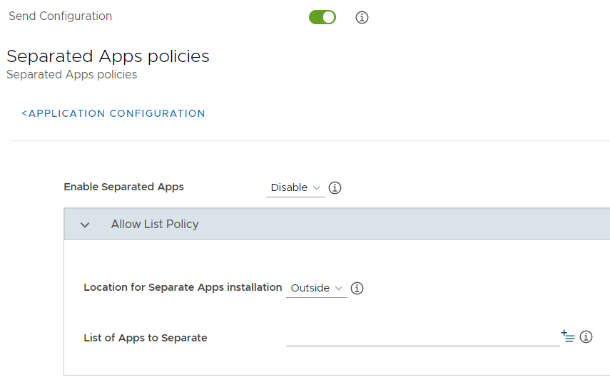
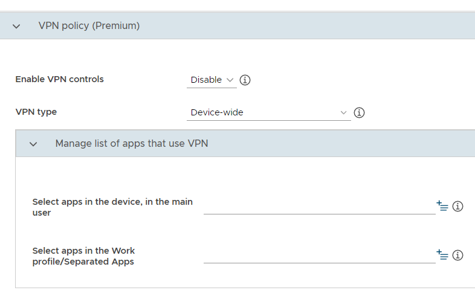
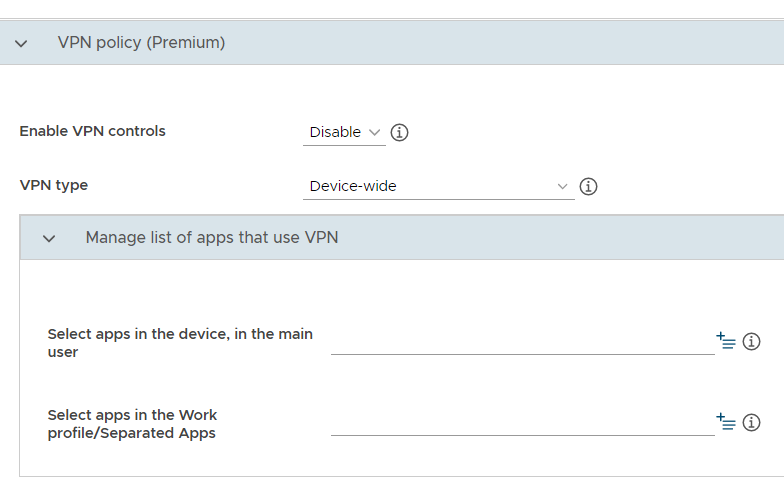
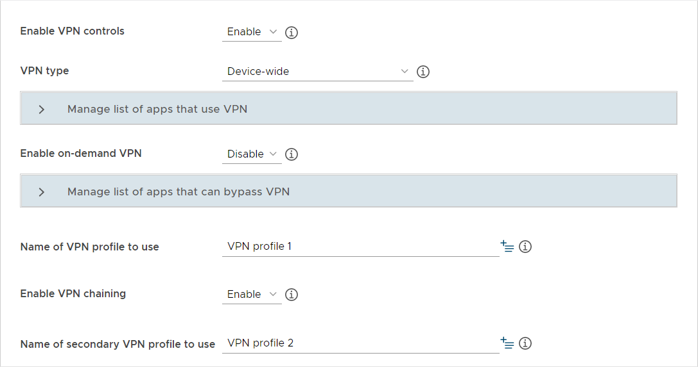

Separated apps
Last updated July 26th, 2023
Enterprises that provide corporate-owned personally enabled devices typically need to separate official work apps from third-party business apps installed by employees, for example,
- Airline apps (United, Delta, and so on)
- Hotel apps (Marriott, Hilton, and so on)
- Ride-sharing apps (Uber, Lyft, and so on)
An IT admin might not be comfortable with a third-party app that needs access to contacts, email addresses, or phone numbers. There may be concerns that sensitive work data may end up on third-party servers. The third-party apps are needed for productivity, but are not fully trusted and vetted by the IT admin. In this scenario, the enterprise is wholly responsible for their corporate assets and needs full control of their devices.

As described in Device management modes, Android 11 replaced the fully managed device with work profile with a new work profile on company-owned devices. The goal is to protect the privacy of personal activities on company devices, and provide IT admins with adequate control over the personal side of the device. For enterprises that still need full control over a device while enabling authorized third-party business apps, Samsung exclusively offers an additional option called Separated Apps.
Separated Apps isolates third-party apps in sandboxed folder. The third-party apps cannot intercommunicate with work apps or access confidential work data. Keep in mind that Separated Apps does not provide the same privacy guarantees as the new work profile on company-owned devices. As such, it is not intended for personal apps and data.
How it works
Separated Apps are installed in a securely separate folder:

An enterprise IT admin uses:
-
a UEM system to install work apps on the fully managed device, for full access and control
-
the Knox Service Plugin to enable Separated Apps and identify the apps to install in the folder
By default, the following apps are available inside the Separated Apps folder, but don’t have launch icons. They can however be launched by other apps. For example, if you open an attached image in an email app, the Gallery displays the image.
- Google Chrome
- Microsoft Office (depends on model)
- Samsung Calendar
- Samsung Camera
- Samsung Contacts
- Samsung Gallery
- Samsung MyFiles
- Samsung Video
The device user can:
-
set up an app shortcut from the device level, to launch an app inside the Separated Apps folder.
-
configure the following Settings inside the Separated Apps folder: apps, notifications, data usage, certificates, and keyboard and input.
Set up Separated Apps
-
Within KSP, navigate to Separated Apps policies.
-
From the Enable Separated Apps policies drop-down menu, select Enable. If you later select Disable, this removes all apps inside the Separated Apps folder.

-
For the List of Apps to Separate, provide app package names, for example, com.united.mobile.android, com.marriott.mrt, com.ubercab.
-
Since UEM apps must be outside the Separated Apps folder, they are ignored in the app list.
-
Adding or removing packages will update the device the next time the policy is downloaded. If the new policy conflicts with the current configuration on the device (for example, an app is installed in the group and has now been removed from the list), the change will cause the apps to be installed or uninstalled as appropriate (for example, the app in the example would be removed from the group).
Ensure that the KSP package is added in the separation list when specifying the location to be Outside. Otherwise, the App separation activation would fail due to wrong location of the KSP package.
-
-
For the Location for Separate Apps installation, select either:
-
Inside (default): To install the list of apps inside the Separated Apps folder. This works like an allow list, to identify an exclusive list of authorized apps, which get installed in the Separated Apps folder.
-
Outside: To install the list of apps outside the Separated Apps folder. This works like a block list, to identify work apps like email and messaging, which must get installed at the device level and not inside the Separated Apps folder. All other apps not in the list of apps go in the Separated Apps folder.
-
Once separated, apps are not allowed to exist in both locations at one time, so an app must be either inside or outside the separated apps. The exception is third-party keyboards.
Once the policy is set, it is pushed to end user devices. When the device user begins installing apps, the Knox framework separates the apps based on the configured policy.
Already installed third-party apps in the Outside location are disabled in user0 and re-installed inside Separated Apps if they are not included in the app list. Third-party keyboards and UEM agents are not subject to this.
The only way to change the location once the policy has been created is to disable and recreate the policy with a different setting. It cannot be changed once activated.
For details about Separated Apps and other KSP policies, go to Configure advanced policies.
Third-party keyboards
Third-party keyboards are allowed to exist both outside and inside the Separated Apps folder, so the same keyboard can be used regardless of the location of the app being used. Any keyboard app that is installed is automatically installed in both locations. As such, keyboard apps will be ignored in the app list.
Following is the default behavior for third party keyboards:
-
After Separated Apps is created:
-
All previously installed third-party keyboards are available in both locations.
-
Newly installed third-party keyboards are available in both locations.
-
-
If the device user uninstalls a third-party keyboard then it will be uninstalled from both locations.
-
Upon disabling Separated Apps, all keyboards remain for the device owner (in user0).
Access control policies
The following access control policies are applied to the Separated Apps. These policies cannot be changed.
-
By default, Managed Google Play is the only approved installer.
-
External SD card access is not permitted for Separated Apps.
-
Bluetooth sharing is not permitted for Separated Apps.
-
Copy & Paste between apps inside and outside the Separated Apps is not permitted.
-
USB file transfer is not permitted for Separated Apps.
-
NFC is supported for Separated Apps except for payment-based NFC.
-
Screen shots are permitted for Separate apps and saved in storage only accessible to the Separated Apps.
Backup policy
By default, backup is enabled for Separated Apps. If the device owner disables backup for entire device then backup for Separated Apps will also be disabled. If the device owner then enables backup again then backup for Separated Apps will also be enabled.
VPN setup
When using Separated Apps, you can set up the following types of VPN configurations through KSP:
-
Full-device VPN: All apps on the device, both inside and outside the Separated Apps folder, use the same VPN tunnel.
-
Per-app VPN: The IT admin can configure a VPN tunnel for select apps.
-
Per-user VPN: The IT admin can configure a VPN tunnel for all apps inside or outside the Separated Apps folder.
-
VPN chaining: IT admin can configure two VPN tunnels to double-encrypt traffic.
For help setting up these VPN configurations, browse the screens below, which show example settings.
Full-device VPN

Per-app VPN

Per-user VPN

VPN chaining

VPN profile

On this page
Is this page helpful?